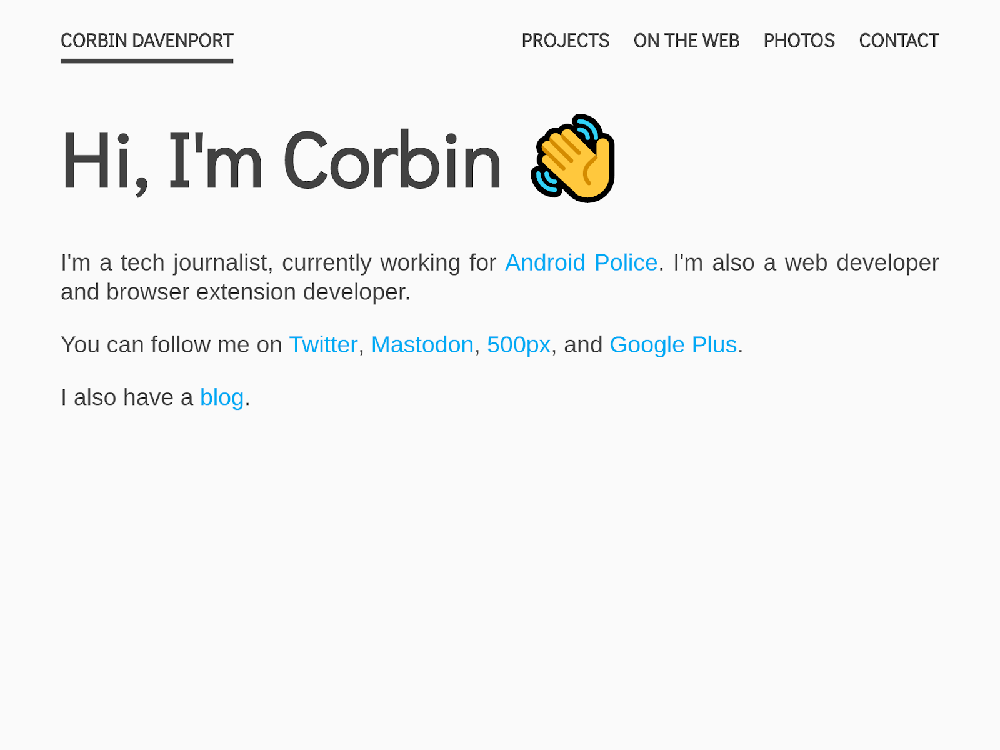
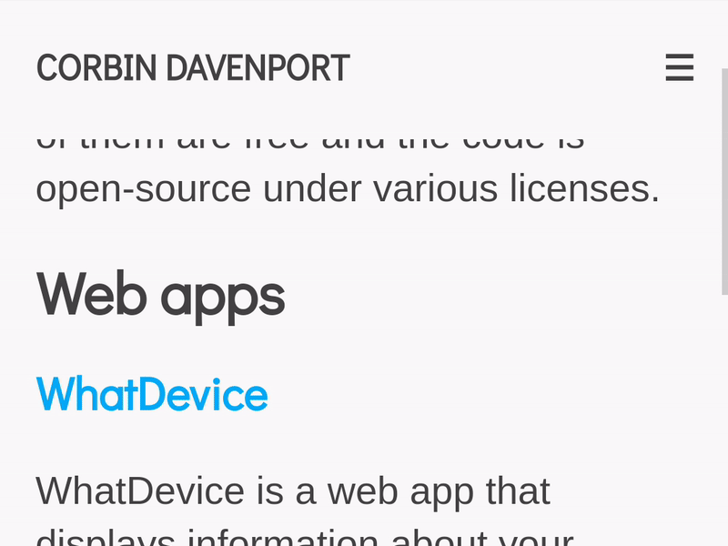
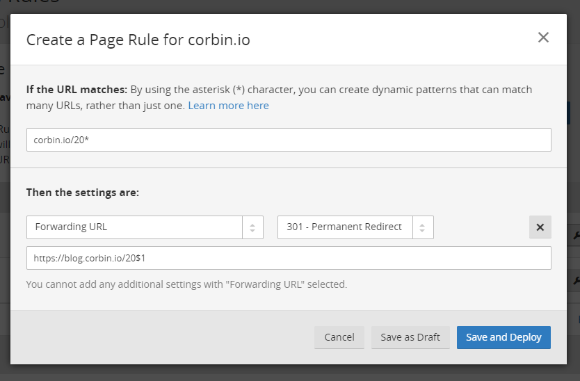
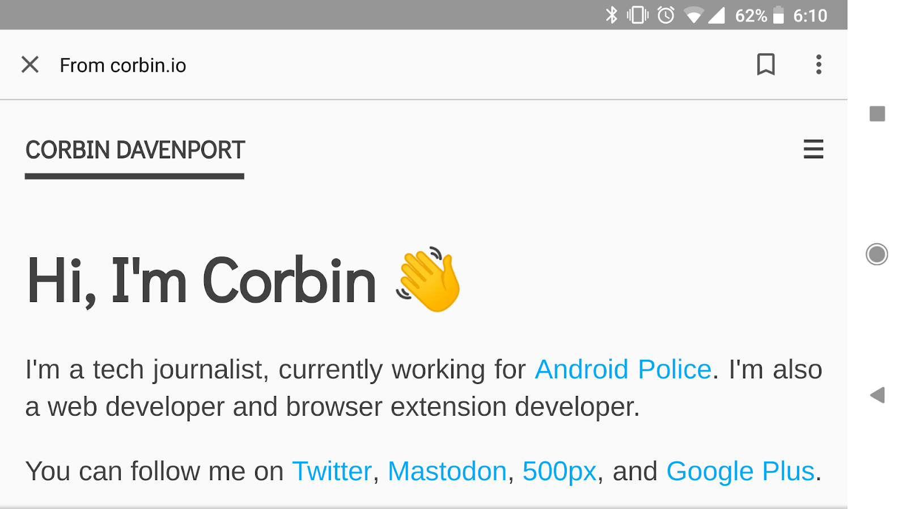

For the past two years, I’ve hosted my personal site (first corbin.cc, then later corbin.io) on Blogger. At the time, I was using my site as a blog I rarely posted to, so it didn’t seem like a good idea to pay for a host that supported WordPress. Even though Google rarely touches it these days, Blogger is still a decent platform, especially since it supports custom HTML/CSS/JS.
Last month, I wanted to try replacing it with a static site. My main goal was to highlight my social media accounts more promiently. I also wanted it to load quickly and not use any JS/CSS frameworks, like Bootstrap or Bulma. There’s nothing wrong with those projects, I just wanted to try writing my own solution from scratch.
First, I had to choose a host. I settled on GitHub Pages, mostly because I’ve used it before. It allows you to host static web content (no PHP) for free, so it’s perfect for basic websites. By default, it will host your site as a sub-domain on GitHub, but you can use a custom domain as well.
Next, I had to actually write the site. I use Visual Studio Code as my text editor of choice, and there's a plugin that will automatically generate HTML5 boilerplate, with all the meta tags required for modern pages to work properly. The basic formatting of my site is pretty simple - a navigation bar with links, and a container for the rest of the content. The navigation is fixed, so it stays at the top of the screen, even while scrolling.

On smaller screens, the navigation bar switches to a menu button, which shows links when tapped. This is pretty standard for mobile sites, but JavaScript is commonly used to render the menu. I wanted to try making a pure CSS solution, based on various tutorials from other developers.
I won’t fully explain how it works here, but I do want to go over the basic premise. On some web forms, clicking the text next to a checkbox will toggle the box, because the text is inside a <label> tag. With CSS, it’s possible to apply styles to a checkbox depending on if it’s checked or not, using the :checked selector. It’s also possible to apply styles to an element adjacent to another element, using the + selector.
By combining these selectors, you can apply code to an HTML element next to a checked checkbox. With this in mind, I laid out the code for my navigation like this:
The menu icon is inside a label element, so clicking it will click the hidden checkbox. Once the box is checked, this CSS code kicks in, which will slide out the menu:
Tapping the menu icon again will un-check the box, therefore hiding the navigation menu again. It’s a hacky solution, and definitely not ideal in all circumstances, but it worked out great in my case.

If you’re interested to see more of my site’s code, you can take a look here.
With my new static site ready, it was time to move it from a subdomain on GitHub to my own domain. But first, I had to move my Blogger blog to a new location - I chose blog.corbin.io. For this, I just entered the new URL in Blogger’s ‘Basic’ settings, and it gave me two CNAME values to put into CloudFlare’s DNS records.
I expected all previous links to my blog would break by doing this, but CloudFlare actually provides a solution using Page Rules. Since all blog posts started with a year (2016, 2017, etc), I set up a rule to redirect all URLs starting with “corbin.io/20*” to “blog.corbin.io/20*”, where * is the rest of the address. This meant that all existing links to my blog posts continued to work - thanks CloudFlare!

Finally, it was time to move the new static site to my domain. I basically just followed this tutorial, and after waiting a while for the changes to take effect, my new site was live!
As a bonus objective of sorts, I wanted to try implementing support for Google AMP. I’m not a fan of the product in general (this article explains why), but I wanted to get familiar with how it works. Simply put, AMP is a format for mobile static pages, designed to load quickly on mobile by cutting out most HTML and JS code. For sites adopting the technology, each page would have an AMP version, usually generated automatically.
The only reason AMP has taken off is because sites using it will rank higher in Google search results. Since my site’s home page is the only one shown in search results (at least on the first page of results), I only made an AMP version of that page. Since my site had almost no JavaScript to begin with, very few changes were required for the AMP version. I replaced the Google Analytics code with the AMP equivalent, and moved all CSS into the document head - that’s it.

Once the validation tool gave me the thumbs up, I uploaded the AMP page and pasted the address into to the online tester. It showed what it would look like in search results, and had a button for submitting the page to Google. Two days later, the AMP page appeared in mobile search results. It looks identical to the main site, but it loads slightly quicker because Google caches it on their servers.